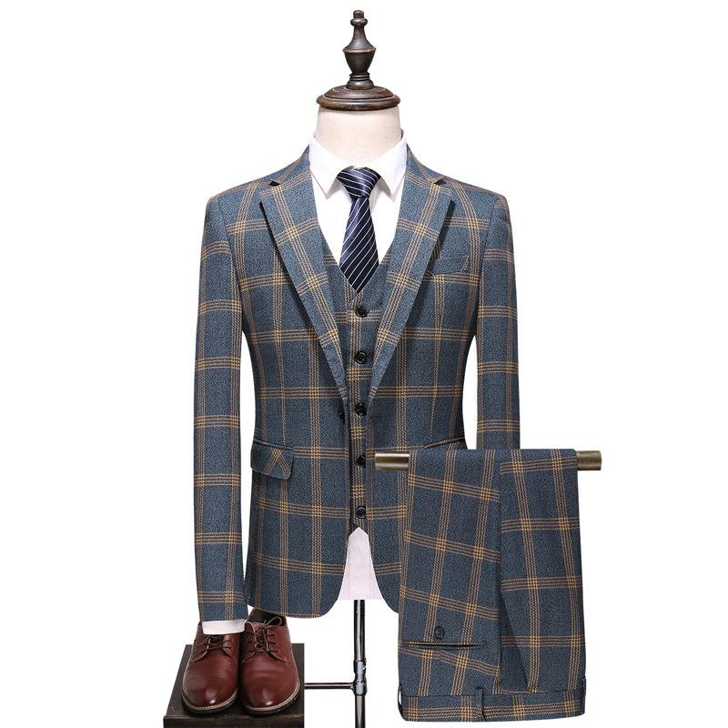

Acheter un costume homme haut de gamme en ligne : Découvrez nos modèles
|
||
| COSTUME BLEU TURQUOIS | COSTUME VIOLET TURQUOIS | COSTUME BLEU FONCE |
| 80.000 FCFA | 80.000 FCFA | 80.000 FCFA |
|  | ||
| COSTUME BLEU TURQUOIS | COSTUME VIOLET TURQUOIS | COSTUME BLEU FONCE |
| 80.000 FCFA | 80.000 FCFA | 80.000 FCFA |
VOIR NOS COSTUMES |
Vous souhaitez acheter un costume homme de qualité au prix le plus juste ? Gentleman Style vous propose ses modèles haut de gamme à prix raisonnés
sur sa boutique en ligne. Costume deux ou trois pièces, smoking… Tous nos modèles sont garantis 100% laine italienne et
disponibles en différentes coupes. Découvrez nos collections et les avantages de notre offre.
Des costumes 100% laine à l’élégance intemporelle. Osez sortir du lot |
| La La qualité d’un costume pour homme tient avant tout à la qualité du tissu et à la justesse de la coupe. Deux éléments qui ne pardonnent aucune erreur mais qui, lorsqu’ils sont réunis, vous donnent une allure incomparable. |
| Pour cela, Gentleman Style, spécialiste du prêt-à-porter masculin haut de gamme, vous propose des modèles en laine italienne disponibles en plusieurs coupess, pour s’adapter à toutes les morphologies. Vous trouverez sur notre site nos différentes collections (avec des nouveautés à chaque saison) pour un achat de costume en ligne , que ce soit pour un événement, votre activité professionnelle ou une tenue de mariage pour homme originale : |
|
| Nos différents modèles sont disponibles en plusieurs coloris (gris, marron, bleu, noir…) et dans un large choix de tailles. Une attention particulière est portée aux finitions (col, boutons, poches, doublure…) pour une silhouette irréprochable. |
Des costumes 100% européens au prix le plus juste |
| Lorsque l’on souhaite s’écarter des grandes enseignes de prêt-à-porter, il est fréquent de se demander où acheter un costume pour homme à prix raisonnable sans sacrifier en qualité. |
| La grande distribution peut donner l’impression de proposer des tarifs moindres que ceux que l’on trouverait chez un tailleur ou une marque indépendante, mais au final, le coût des intermédiaires est inclus dans le prix et les matières, souvent synthétiques, ne garantissent pas nécessairement la qualité que l’on est en droit d’attendre de cet incontournable du vestiaire masculin. |
| En tant que professionnel du métier et passioné de l'élégance, Gentleman Style maîtrise les règles en rapport avec ce vêtement qui est réservé aux amoureux de l'élégance. |
| Nous avons fait le choix de travailler en relation directe avec nos fournisseurs en évitant au maximum les intermédiaires afin de vous faire bénéficier de vêtements haut de gamme à leur vrai prix. Nous sommes ainsi en mesure de vous proposer des costumes pour homme de qualité a un prix raisonnable. |
Gentleman Style vous propose un paiement en ligne sécurisé et un envoi rapide et soigné. Nous restons a votre ecoute pour un relooking (avec supplément
du prix pour la consultation). Pour le service de relookingmles séances (choix des options, essayages, retouches) se font exclusivement en magasin.
Pour toute question, n’hésitez pas à nous appeler au 00226 00 00 00 00.
Nous serons heureux de vous renseigner et de vous apporter nos conseils.